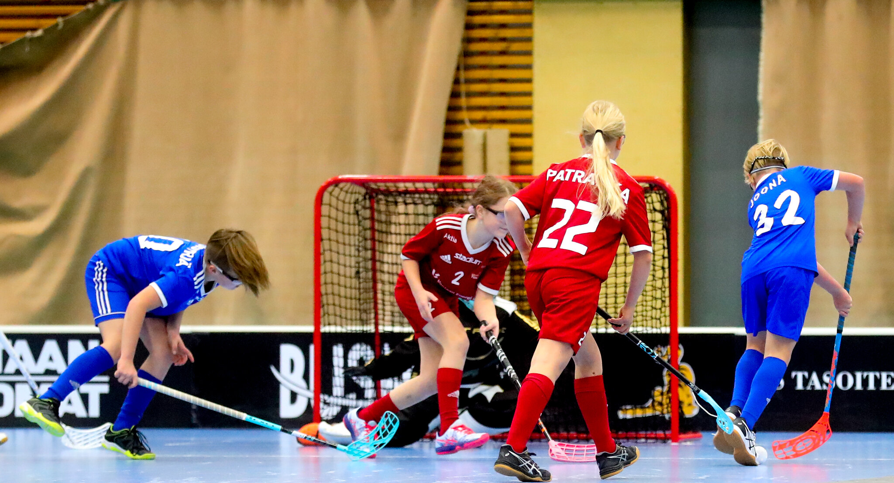
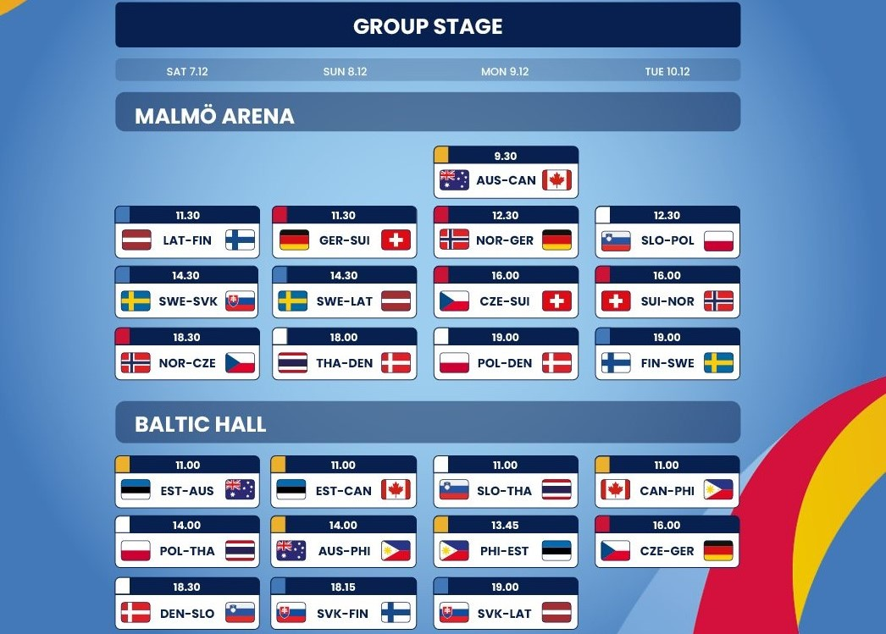
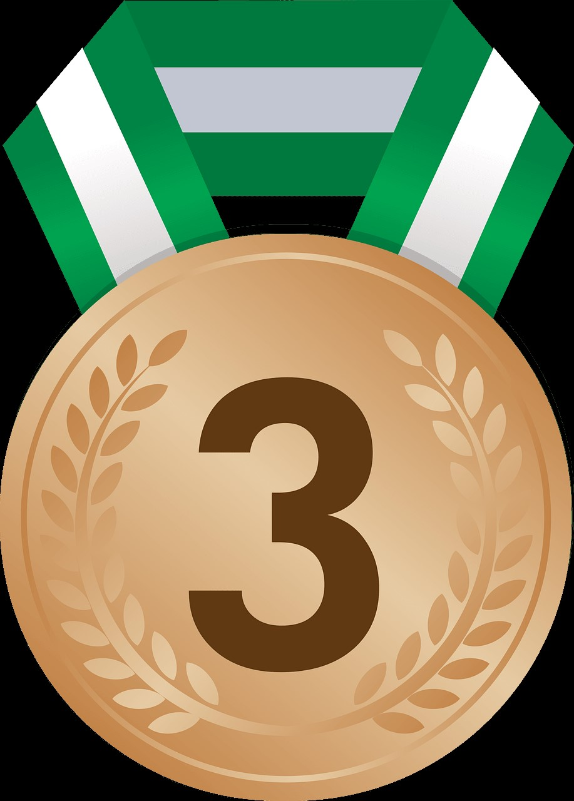

Tietoa Salibandy:stä
Salibandy on 1960-luvulla Ruotsissa kehitetty mailapeli, joka on ottanut vaikutteita jääkiekosta ja kaukalopallosta.
Suosio Suomessa
Salibandy on Suomen toiseksi harrastetuin palloilulaji noin 354 000 harrastajallaan.
Kansainvälisyys
Lajia pelataan yli 60 maassa ja se on kasvattanut suosiotaan Euroopassa, Aasiassa ja Pohjois-Amerikassa.
Mitallitaulukko
| Maa | Kulta |
Hopea

|
Pronssi  | yhteensä |
|---|---|---|---|---|
| Ruotsi | 10 | 4 | 0 | 14 |
| Suomi | 4 | 7 | 3 | 14 |
| Tshekki | 0 | 2 | 3 | 5 |
| Sveitsi | 0 | 1 | 7 | 8 |
| Norja | 0 | 0 | 1 | 1 |